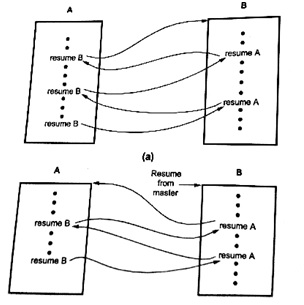

Q. : What do you understand by coroutines? How do we achieve control transfer between coroutines?

Coroutine is a special kind of subprogram. Coroutines have multiple entry points which are controlled by themselves. They also have means to maintain their status between various activations. This means coroutines must be history sensitive and thus have static local variables. Coroutines often begin at points other than its beginning. Because of this, the invocation of coroutine is called resume rather than call.
Only one coroutine executes at a given time. Rather than executing to their other ends, coroutines often partially execute and then transfer control to other coroutines. When restarted, a coroutine resumes execution just after the statement it used to transfer control elsewhere.
Coroutines are created in an application by a program unit called master unit, which is not a coroutines. When created, coroutine executes their initialization code, and then returns control to that master unit.
Suppose, programs A and B are coroutines. In Fig. the execution of a corouting A is started by the master unit. After some execution, A starts B. When coroutine B in fig. (a) first causes control to return to coroutine A, the semantics is that A continues from where it ended its last execution. In particular, its local variables have the values left then by the previous activation. Fig. (b) shows alternative execution sequence of coroutines A and B. In this case, B is started by the master unit.